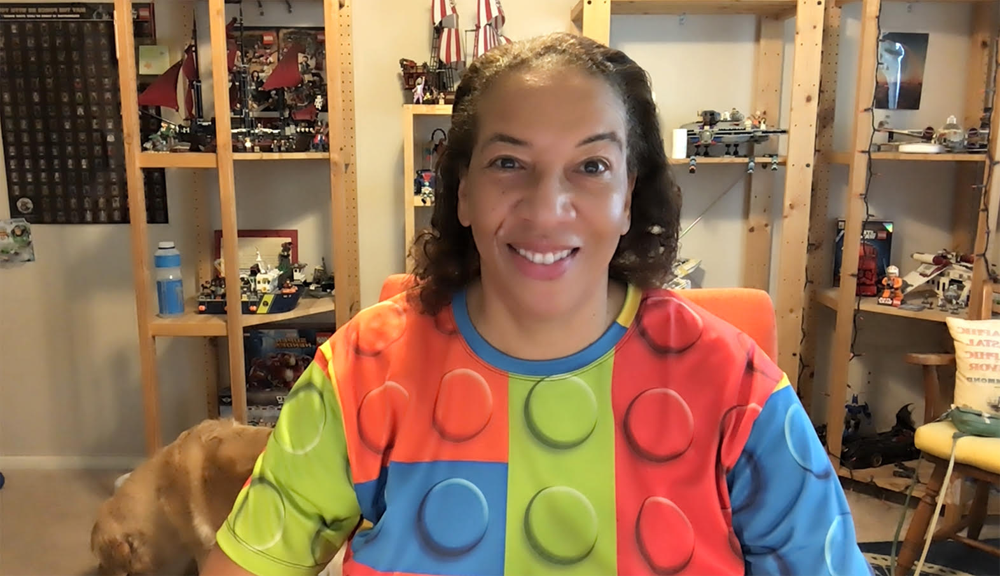

Interview with Dr. Dawn Wright
Interview with Dr. Dawn Wright at MozFest. View event summary
community call
View event summary
Date: March 8, 2021
Time: 10:15am PST (UTC-8)
Where: on Zoom at MozFest, Mozilla’s Internet Festival
Join us: registration required (space is limited!)
Please join us for a conversation with Dr. Dawn Wright (@DeepSeaDawn) about the connections between the open science movement, democratized tech, solution-driven science, and climate change.
Dr. Wright is American geographer and oceanographer (Wikipedia). She is Chief Scientist at ESRI (the Environmental Systems Research Institute).
Dr. Wright is a role model to many in science, including us. We are so excited about this conversation, which will also launch Openscapes Community Calls. If you have questions you’d like to ask Dawn, please share them on Twitter by tagging @openscapes.
Reuse
Citation
BibTeX citation:
@online{openscapes2021,
author = {Openscapes and Mozilla and Openscapes},
title = {Interview with {Dr.} {Dawn} {Wright}},
date = {2021-03-08},
url = {https://openscapes.github.io/events/posts/2021-03-08-dr-dawn-wright-interview/dawn-wright.html},
langid = {en}
}
For attribution, please cite this work as:
Openscapes, and Mozilla and Openscapes. 2021. “Interview with Dr.
Dawn Wright.” March 8, 2021. https://openscapes.github.io/events/posts/2021-03-08-dr-dawn-wright-interview/dawn-wright.html.